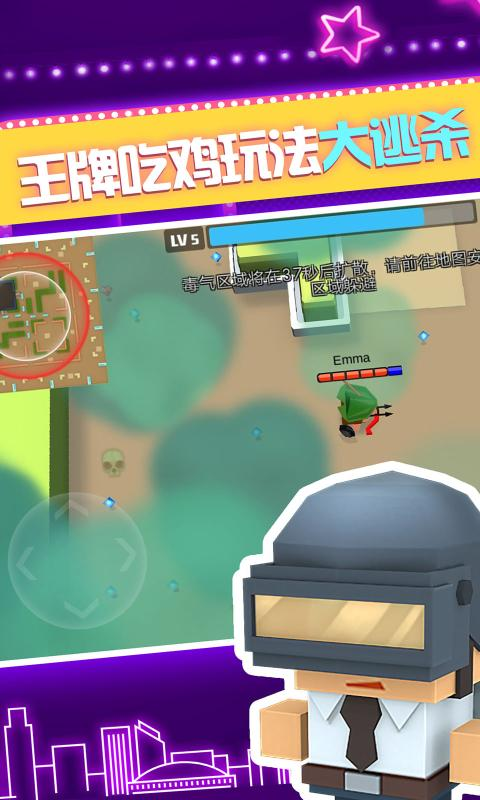

Introduction
Archers.io is a fast‑paced multiplayer arena game where you control a lone archer and gradually build an entire army of bow‑wielding allies. Unlike typical .io titles that focus on raw size, Archers.io rewards precise aiming, quick recruitment, and tactical positioning. Each arrow you fire can turn a wandering wanderer into a loyal follower, turning the tide of battle in seconds. The game’s clean, responsive controls and vibrant battlefield keep the action fluid while the constant struggle for dominance keeps you on your toes. Players love the blend of simple mechanics and deep strategy: mastering the balance between shooting, moving, and recruiting creates a satisfying loop that’s easy to pick up but hard to master.
Getting Started
Jump into Archers.io by opening the game in any modern browser; no download or sign‑up is required. On a PC, move your archer with WASD or the arrow keys and aim with the mouse; a single left‑click fires an arrow. If you’re on mobile, an on‑screen joystick appears at the bottom‑left for movement, and a tap‑and‑hold on the right side lets you aim and release to shoot. The core loop is simple: survive, shoot, and recruit. When an enemy archer is defeated, a wandering archer often spawns nearby—walk close to them and they automatically join your army. Your followers will mirror your shots, so positioning yourself behind a group can multiply your firepower. At the start, stay near the center of the map where recruitment chances are highest, but keep moving to avoid being surrounded. Keep an eye on the leaderboard in the top‑right corner; it shows who has the largest army. As your ranks grow, experiment with forming a V‑shaped line to maximize arrow coverage. Practice makes perfect: spend the first few minutes learning the aim assist timing and the slight arrow drop over distance before diving into larger skirmishes.
Basic Tips
1. **Recruit Early and Often** – As soon as you see a lone archer wandering after an enemy falls, move toward them. In the first 30 seconds, a single extra archer can double your firepower, giving you a decisive edge in the early skirmishes. 2. **Stay Mobile** – Standing still makes you an easy target for flanking attacks. Use short bursts of movement, dodge behind cover, and never stay in the same spot for more than two seconds. 3. **Aim for the Leader** – Enemy groups often follow a leader (the one with the crown icon). Taking out the leader breaks their formation and forces the followers to scatter, making the rest of the fight much easier. 4. **Use Power Shots Strategically** – Hold the fire button longer to charge a power shot that deals extra damage. Reserve these for关键时刻 like when an enemy group is clustered, or when you need to quickly eliminate a high‑value target. 5. **Watch the Map and Spawn Points** – Keep an eye on the mini‑map for emerging threats and for fresh wandering archers. Predicting where new allies will appear lets you pre‑position and recruit them before opponents do.
Advanced Strategies
1. **Zone Control and Territorial Pressure** – Dominate high‑traffic corridors where wandering archers frequently spawn. By holding these chokepoints, you force opponents to either fight you for the area or risk losing fresh recruits. Use your army to create a “no‑go” zone that deters enemy advances. 2. **Flanking and Pincer Movements** – Split your force into two groups and approach the enemy from opposite sides. While one group engages the front, the other hits the enemy’s flank, causing rapid damage and breaking their formation before they can react. 3. **Formation Switching** – Change your army’s shape based on the situation. A tight cluster works well for defending a point, but a wide arc is ideal for offensive pushes, maximizing the number of arrows that can hit a target at once. Practice quick formation swaps using the 'F' key (or a double‑tap on mobile). 4. **Power‑Shot Baiting** – Fire a charged power shot to draw out enemy power shots. As opponents waste their high‑damage cooldowns, you can close the distance and unleash a rapid barrage, turning their own tool against them.
Pro Tips

1. **Predict Enemy Trajectory** – Watch the enemy leader’s movement pattern for 2–3 seconds before firing. If they dodge left, aim slightly right of their predicted path; this pre‑emptive aim often lands the killing shot. 2. **Leverage Terrain for Cover** – Use low walls, rocks, and the map’s edges to break line‑of‑sight. Pop out only when your army is ready to fire, then retreat behind cover before opponents can retaliate. 3. **Control Spawn Timing** – After a major clash, the map spawns fresh wandering archers every 8–10 seconds. Position yourself near these spawn zones right before the window opens to secure the first recruit and snowball your army. 4. **Coordinate Power‑Shot Chains** – Time your power shots so they land simultaneously with your followers’ normal arrows. The combined burst can instantly eliminate a high‑rank opponent before they can react.
Conclusion
Archers.io delivers a perfect blend of quick‑fire action and strategic depth. Master the basics, recruit aggressively, and keep moving to stay alive. As you progress, experiment with formations, flank enemies, and time your power shots for maximum impact. The game’s simple controls make it accessible to anyone, while the nuanced tactics ensure there’s always room to improve. Jump into the battlefield now, build your archer army, and claim the top spot on the leaderboard!